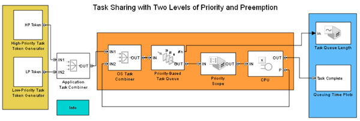

Task Sharing with Two Levels of Priority and Preemption
Contents
Description
This model demonstrates the scheduling and execution of tasks with different priorities.
Task tokens with two priority levels are generated by the two token generators. Each token has attributes representing the priority and the task execution time. The tokens are sorted according to ascending priority in the Priority-Based Task Queue just before the CPU. The tokens are then passed to the CPU for task execution.
Results and Displays
The simulation results can be seen on the following scopes:
- Priority value for tasks being served in the CPU
- Queue length of the Priority-Based Task Queue
- Queuing delay for low-priority tasks completed
- Queuing delay for high-priority tasks completed
The plot with priority value for the current task indicates when a low-priority task was preempted by a high-priority task. The queue length plot displays the number of tasks queued to be processed. The queuing delay plots indicate that the high-priority task tokens do not experience any queuing delay. The low-priority task tokens experience queuing delays because of the preemption behavior.